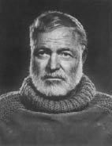

(1899 – 1961)

Dünya romanının en tanınan adlarından biri olan Ernest Hemingway, insan ruhunun derinliklerini incelediği ve hayatın anlamını sorguladığı romanlarıyla ölümsüzler arasına girdi. "Çanlar Kimin İçin Çalıyor?", "Silahlara Veda" ve "Yaşlı Adam ve Deniz" gibi unutulmaz romanlar kaleme alan yazar 1954 yılında Nobel Edebiyat Ödülü'nün sahibi oldu.
Ernest Hemingway (okunuşu: Örnıst Hemingvey), 21 Temmuz 1899 tarihinde İllinois'da, Oak Park kentinde doğdu. Beş çocuklu ailesinin iki erkek çocuğundan biriydi. Adını babası ve amcasının adlarından almıştı. Çocukluğunda, eski bir müzisyen olan annesinden müzik dersleri aldı.
İlk yazılarını, lise yıllarında okul gazetesi olan Trapez'de yayınladı. 1917 yılında liseyi bitirdi. Lisenin ardından ailesinin isteğinin aksine üniversiteye gitmek yerine Kansas City Star adlı gazetede muhabir olarak göreve başladı. Hemingway'in liseden mezun olduğu bu yıllarda, Avrupa'da I. Dünya Savaşı başlamıştı. ABD ilk zamanlarda savaş konusunda tarafsız kalsa da daha sonra Nisan 1917'de savaşa girince Hemingway de orduya başvurdu. Fakat Hemingway, sol gözündeki bozukluktan dolayı orduya alınmadı. Ardından, 1917 sonlarına doğru Kızılhaç'ın da gönüllü aradığını duyduğunda ilk başvuranlar arasında oldu. Ocak 1918'de Hemingway'in başvurusu kabul edildi ve ambulans şoförü olarak orduya katıldı.
Avrupa'da ilk olarak vardığı şehir Paris oldu. 8 Haziran 1918'de birkaç adım ilerisinde patlayan bir Avusturya topu nedeniyle ağır şekilde yaralandı. Yardım etmeye çalıştığı İtalyanlardan bir tanesi ölürken diğeri de bacaklarını kaybetti. Aynı olay esnasında bir başka yaralı İtalyan askerini cepheye taşımaya çalışırken Hemingway bacaklarından yaralandı. Yaşananların ardından İtalyan gazetelerinde kahraman olarak ilan edilip İtalyan hükümeti tarafından Gümüş Onur Madalyası ile ödüllendirildi.
Hemingway, bu olayların ardından Milano'da bir hastanede tedavisi sürerken hemşire Agnes von Kurawsky ile tanıştı. Bu karşılaşma onun ölümsüz romanlarından olan Silahlara Veda'ya esin kaynağı oldu. Tekrar ABD'ye dönen yazar, ailesinin iş bulması için yaptığı baskılara rağmen sakatlığından dolayı ordunun verdiği parayla bir yıl kadar işsiz olarak yaşadı. Daha sonra 1921 yılında eşi Hadley Richardson ile tanıştı ve evlendi. Aynı yıl içerisinde Chicago'ya göç etti. Toronto'da bulunan Daily Star adlı gazetede yazmaya başladı. Gazetede iş bulduktan sonra ilk iş olarak Paris'e taşındı. Paris yıllarında birçok Avrupalı yazar, ressam ve müzisyenle tanıştı. Paris'teki bohem yaşam, Hemingway üzerinde çok etkili oldu.
1925-1929 yılları arasındaki dönemde Hemingway, eserlerinin en güzel örneklerini verdi. Bu yıllarda, hiç tanınmayan bir yazarken birdenbire dünyanın en ünlü yazarları arasında girdi. İlk basılan romanı olan Güneş de Doğar bu dönemde yayınlandı. Güneş de Doğar adlı eserinde savaş yorgunu bir askerin anılarını anlatan Hemingway, 1929 yılında basılan Silahlara Veda ile çok büyük bin üne kavuştu. Silahlara Veda'da, yaralı bir askerin savaşta bir hemşireye duyduğu aşkı dile getiriyordu. Hemingway böylelikle savaşların anlamsızlığına değinmeyi amaçlıyordu.
1931'de Avrupa'da geçirdiği İspanya yıllarına dair Öğleden Sonra Ölüm adlı kitabını yazdı. Afrika'da yaptığı turla ilgili yazılarını ise Afrika'nın Yeşil Tepeleri adlı kitabında topladı. 1940 yılında ise en başarılı eserlerinden olan Çanlar Kimin İçin Çalıyor adlı eserini kaleme aldı ve mesleğinde zirveye ulaştı. 1942'de Amerikan Deniz Kuvvetleri'ne girdi. 1944'te Normandiya Çıkarması'na katıldı ve Paris'in kurtuluşuna tanık oldu.
1952'de başyapıtı olan Yaşlı Adam ve Deniz adlı romanını yazdı. Bu kitapta insanın yaşama nasıl bağlanması gerektiğine ve aslında hayatta her şeyin boş olduğuna dair fikirlerine yer verdi. 1953'te aynı eseri ile Pulitzer Ödülü'nü aldı. 1954'te ise Nobel Edebiyat Ödülü'ne layık görüldü. Hemingway tutkulu bir yaşamın ardından, 2 Temmuz 1961 günü beklenmedik biçimde, Idaho'da kendini av tüfeği ile vurarak yaşamına son verdi.
Seçme Romanları: Güneş de Doğar (1926 – Bilgi Yayınevi, 2009), Kadınsız Erkekler (1927), Silahlara Veda (1929 – Bilgi Yayınevi, 2009), Öğleden Sonra Ölüm (1932), Kazanana Ödül Yok (1933), Afrika'nın Yeşil Tepeleri (1935), Ya Hep Ya Hiç (1937), Çanlar Kimin İçin Çalıyor? (1940 – Oda Yayınları, İstanbul, 2000), Yaşlı Adam ve Deniz (1952 – İnkılâp Kitabevi, 2004), Paris Bir Şenliktir (ölümünden sonra 1964), Akıntı Adaları (ö.s. 1970), Tehlikeli Yaz (ö.s. 1985), Yazma Üzerine (ö.s. 1999)